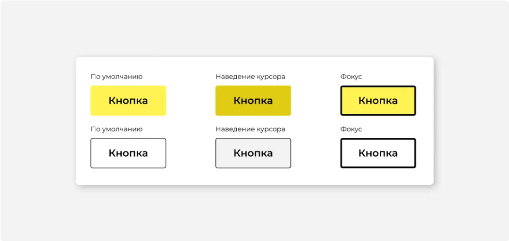
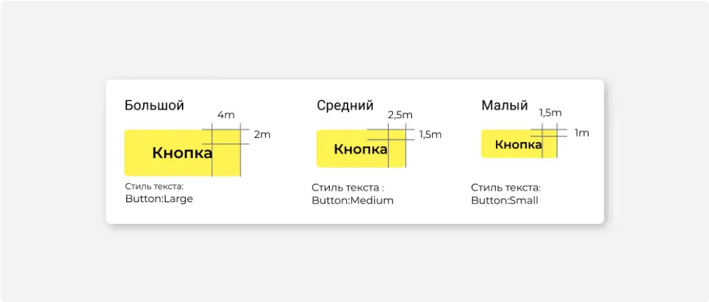
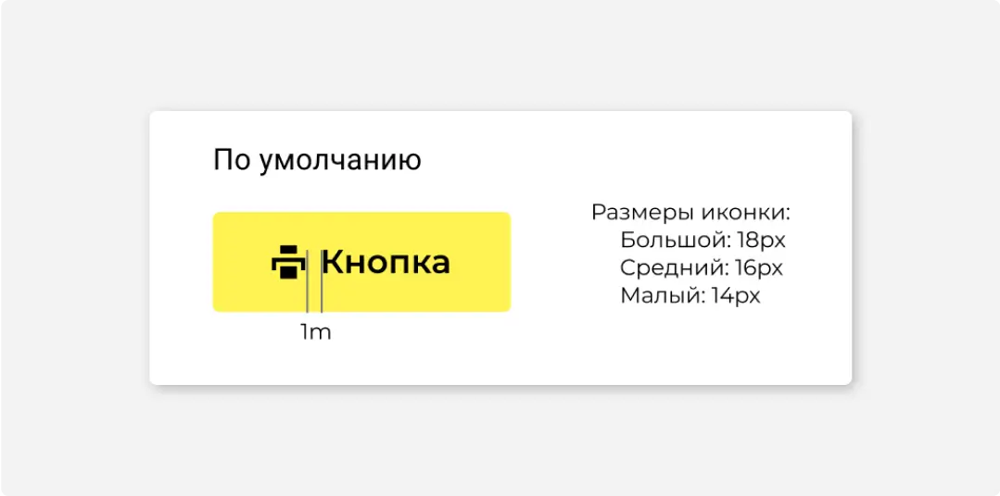

Размеры
С обводкой
С иконкой
#1
Назначение
В современных веб-интерфейсах граница между кнопками и ссылками размыта. Ссылка также может запускать действие. Отличие кнопки в том, что она заметнее, и почти никогда не используется для перехода на другую страницу (то, для чего изначально задумывались гиперссылки).
Не используйте кнопки для перехода на другую страницу.
Существует два типа кнопок: с заливкой и с обводкой.

Первый тип кнопки используется для обозначения главного действия на экране. Они имеют заливку стандартного цвета контролов (желтые, чёрные или в цвет продукта). Например, кнопка «Добавить сотрудника» в модальном окне добавления сотрудника. Или кнопка «Сохранить» на странице редактирования реквизитов. Главная кнопка на экране может быть только одна.
Так же кнопки с заливкой могут быть залиты красным или зеленым цветом. В этом случае красная кнопка будет указывать на необратимое или негативное по смыслу действие, а зеленый — действие с положительной окраской. Зеленую кнопку уместно ставить только если рядом есть красная кнопка с обратным смыслом.
Остальные кнопки на странице второго типа - белые с черной рамкой.
#2
Описание работы
Кнопка реагирует на наведение курсора — становится темнее.
Если используется программа экранного чтения или просто перемещение по интерфейсу осуществляется при помощи клавиатуры, то для выделения необходимой кнопки используется обводка.
#3
Название
Название кнопки пишется с заглавной буквы.
Название кнопки должно однозначно говорить о том, что произойдет если на нее нажать. Плохо, если нужно прочитать все содержимое модального окна, чтобы понять, что делает кнопка.
#4
Иконка
Название кнопки можно дополнять иконкой. Она поможет быстрее найти нужную кнопку в ряду других и быстрее понять, что делает кнопка.
В панели с большим количеством кнопок, иконки будут создавать лишний визуальный шум. В этом случае оставьте иконки только у самых важных действий.
#5
Размеры
Существует 3 стандартных размера кнопки:
Маленькие — используйте рядом с полями ввода, они соответствуют им по высоте.
Средние — используйте в модальных окнах и крупных блоках, для действий со списками и таблицами на верхней залипающей панели.
Большие — используйте как главные кнопки экрана или формы для сохранения и отмены, перехода к следующему экрану.
Ширина кнопки задается размером текста внутри нее и стандартными отступами. Произвольно уменьшать отступы нельзя.
В качестве разделителя между названием кнопки и иконкой используется отступ в 1m.
